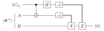

11 Teleportation and entanglement swapping
Entanglement is a resource that can be consumed to perform tasks impossible with local operations and classical communication alone. This chapter presents the three canonical protocols: teleportation (sending an unknown qubit using one shared Bell pair and two classical bits), dense coding (the reverse trade, two classical bits through one qubit), and entanglement swapping (entangling particles that never interacted). All three rest on the Bell-state measurement, whose optical implementation is discussed first.
11.1 Bell-state measurement
A Bell-state measurement (BSM) is a projective measurement of two qubits in the Bell basis \(\{\ket{\Phi^\pm}, \ket{\Psi^\pm}\}\). With gates (Chapter 12) it is easy: a CNOT followed by a Hadamard on the control maps the Bell basis to the computational basis, \[\ket{\Phi^+} \mapsto \ket{00}, \quad \ket{\Phi^-} \mapsto \ket{10}, \quad \ket{\Psi^+} \mapsto \ket{01}, \quad \ket{\Psi^-} \mapsto \ket{11},\] and two single-qubit measurements finish the job.
With linear optics (photons, polarisation qubits) there is no deterministic CNOT, but interference does part of the work. Send the two photons onto the two inputs of a 50:50 beam splitter. Because photons are bosons, the total state (polarisation \(\otimes\) spatial mode) must be symmetric. The singlet \(\ket{\Psi^-}\) is the only antisymmetric polarisation state, so its spatial part must be antisymmetric: the photons always exit from different ports (antibunching). The three symmetric Bell states give photons exiting from the same port (Hong–Ou–Mandel bunching). A coincidence between the two outputs thus heralds \(\ket{\Psi^-}\). Adding polarising beam splitters at the outputs also identifies \(\ket{\Psi^+}\) (both photons in the same port but with orthogonal polarisations), while \(\ket{\Phi^\pm}\) remain indistinguishable. With linear optics and no ancillas, a BSM succeeds at most 50% of the time.
11.2 Teleportation
Alice holds a qubit in an unknown state \(\ket\psi_C = \alpha\ket 0 + \beta\ket 1\) and wants to transfer it to Bob. She cannot measure it (one shot gives at most one bit and destroys it) nor clone it. With a shared Bell pair \(\ket{\Phi^+}_{AB}\) (Alice holds \(A\), Bob holds \(B\)) she can.
Expanding \(C\) and \(A\) in the Bell basis, \[\ket\psi_C\ket{\Phi^+}_{AB} = \frac12\Bigl[\ket{\Phi^+}_{CA}\,\ket\psi_B + \ket{\Phi^-}_{CA}\,\hat Z\ket\psi_B + \ket{\Psi^+}_{CA}\,\hat X\ket\psi_B + \ket{\Psi^-}_{CA}\,\hat X\hat Z\ket\psi_B\Bigr],\] where \(\hat Z\ket\psi = \alpha\ket 0 - \beta\ket 1\), \(\hat X\ket\psi = \beta\ket 0 + \alpha\ket 1\), \(\hat X\hat Z\ket\psi = -\beta\ket 0 + \alpha\ket 1\). Nothing has happened yet — this is just a rewriting. Now:
- Alice performs a BSM on \(C\) and \(A\); each of the four outcomes occurs with probability \(\tfrac14\), independently of \(\ket\psi\).
- Bob’s qubit collapses to \(\hat\sigma_k\ket\psi\), a known Pauli rotation of \(\ket\psi\).
- Alice sends the two-bit outcome to Bob over a classical channel.
- Bob applies the correction \(\hat{\mathbb 1}\), \(\hat Z\), \(\hat X\) or \(\hat Z\hat X\) and recovers \(\ket\psi_B\) exactly.

Figure: teleportation circuit. CNOT + Hadamard + two measurements implement the Bell-state measurement; double lines are classical bits controlling Bob’s corrections.
Remark (What teleportation does not do).
- No faster-than-light signalling: before receiving the two bits, Bob’s qubit is maximally mixed (\(\tfrac14\sum_k\hat\sigma_k\ket\psi\bra\psi\hat\sigma_k^\dagger = \hat{\mathbb 1}/2\)), independent of \(\ket\psi\).
- No cloning: the original is destroyed by Alice’s measurement; only one copy exists at any time.
- No matter transfer: the information (the state) moves, not the particle.
The resource count is exact: 1 ebit + 2 classical bits = 1 qubit transmitted. Teleportation was demonstrated with photons in 1997 (Innsbruck, Rome), later over 143 km in free space and from ground to the Micius satellite. It is the basic primitive of quantum networks and of measurement-based quantum computation.
11.3 Dense coding
The converse trade: with a shared \(\ket{\Phi^+}\), Alice can send two classical bits by transmitting one qubit. She applies \(\hat{\mathbb 1}\), \(\hat Z\), \(\hat X\) or \(\hat X\hat Z\) to her half, producing the four orthogonal Bell states \[\ket{\Phi^+}, \quad \ket{\Phi^-}, \quad \ket{\Psi^+}, \quad \ket{\Psi^-}\ (\text{up to a sign}),\] and sends her qubit to Bob, who performs a BSM and reads two bits. This does not violate the Holevo bound (Chapter 9): two qubits are involved in total, and the one sent earlier as part of the entangled pair carries no information by itself. Formally, 1 ebit + 1 qubit = 2 classical bits.
11.4 Entanglement swapping
Suppose a source prepares \(\ket{\Phi^+}_{12}\) and another prepares \(\ket{\Phi^+}_{34}\), with photons \(1, 4\) far apart and \(2, 3\) sent to a middle station. Regrouping, \[\ket{\Phi^+}_{12}\ket{\Phi^+}_{34} = \frac12\Bigl[\ket{\Phi^+}_{14}\ket{\Phi^+}_{23} + \ket{\Phi^-}_{14}\ket{\Phi^-}_{23} + \ket{\Psi^+}_{14}\ket{\Psi^+}_{23} + \ket{\Psi^-}_{14}\ket{\Psi^-}_{23}\Bigr].\] A BSM on \(2, 3\) projects \(1, 4\) onto the same Bell state — photons 1 and 4 become entangled although they never interacted. Swapping is teleportation of an entangled half: photon 2’s entanglement with 1 is teleported onto photon 4. Since the outcome is announced, Bob can rotate to a standard Bell state.
Entanglement swapping is the core of quantum repeaters. Direct transmission decays exponentially with fibre length; dividing the distance into segments, entangling neighbouring nodes and swapping at intermediate stations (with entanglement purification and quantum memories) makes the scaling polynomial. It is also used in measurement-device-independent QKD, where an untrusted middle station performs the BSM.
11.5 Exercises
Verify the teleportation identity for the \(\ket{\Psi^-}_{CA}\) term and find the correction Bob must apply.
Solution. Collect in \(\ket\psi_C\ket{\Phi^+}_{AB} = \tfrac{1}{\sqrt2}(\alpha\ket{000} + \alpha\ket{011} + \beta\ket{100} + \beta\ket{111})_{CAB}\) the terms with \(CA \in \{01, 10\}\): \(\tfrac{1}{\sqrt2}(\alpha\ket{01}\ket 1 + \beta\ket{10}\ket 0)\). Using \(\ket{01} = (\ket{\Psi^+} + \ket{\Psi^-})/\sqrt2\) and \(\ket{10} = (\ket{\Psi^+} - \ket{\Psi^-})/\sqrt2\), the \(\ket{\Psi^-}\) component is \(\tfrac12\ket{\Psi^-}(\alpha\ket 1 - \beta\ket 0)\). Applying \(\hat X\) gives \(\alpha\ket 0 - \beta\ket 1\), then \(\hat Z\) gives \(\alpha\ket 0 + \beta\ket 1\): the correction is \(\hat Z\hat X\).
Show that, averaged over Alice’s outcomes, Bob’s state before the classical message is \(\hat{\mathbb 1}/2\).
Solution. Bob’s state is \(\tfrac14\sum_{k=0}^3\hat\sigma_k\ket\psi\bra\psi\hat\sigma_k\) with \(\hat\sigma_k \in \{\hat{\mathbb 1}, \hat Z, \hat X, \hat X\hat Z\}\). In Bloch terms the four Paulis flip pairs of components of \(\vec r\), and the average of \(\vec r\) over the four is \(0\); equivalently, this is the completely depolarizing channel: \(\tfrac14(\hat\rho + \hat X\hat\rho\hat X + \hat Y\hat\rho\hat Y + \hat Z\hat\rho\hat Z) = \hat{\mathbb 1}/2\).
11.6 Sources
Prof. Vallone, Quantum Information and Computing, lecture 15 (Bell-state measurement with beam splitter and PBS, teleportation, entanglement swapping) and the course outline (dense coding). Nielsen & Chuang, Sections 1.3.7 and 2.3. Benenti, Casati & Strini, Vol. I, Chapter 4. Original references: C. Bennett et al., Phys. Rev. Lett. 70, 1895 (1993); C. Bennett and S. Wiesner, Phys. Rev. Lett. 69, 2881 (1992); M. Żukowski et al., Phys. Rev. Lett. 71, 4287 (1993); D. Bouwmeester et al., Nature 390, 575 (1997).